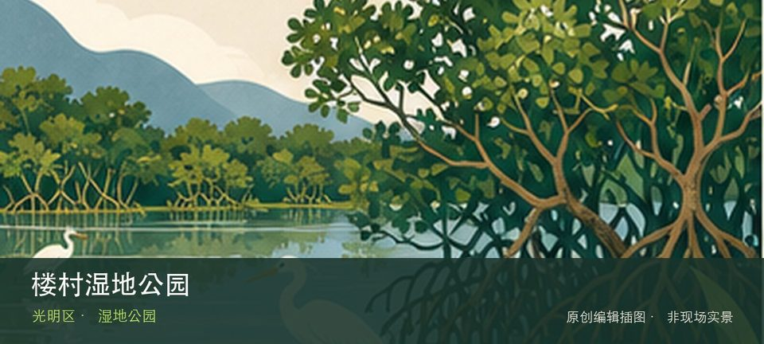

适合谁
适合观鸟、自然教育和安静慢行；不适合携宠、投喂或为拍照进入保育区域。

SHENZHEN GUIDE · 264
新湖 · 湿地公园
楼村湿地公园位于新湖楼村，社区湿地、水生植物和慢行步道提供小尺度自然观察，重点在河网修复与居民日常而非稀有物种打卡。从楼村湿地水系转向水生植物群落时，地点的空间、历史或使用方式才会变得清楚。观察重点是楼村湿地水系与水生植物群落之间的生境关系，而不是追逐动物或进入滩涂取景。保持距离、不投喂，并把水位、蚊虫、暴晒和雷雨作为当天是否停留的判断条件。
WHY GO
适合观鸟、自然教育和安静慢行；不适合携宠、投喂或为拍照进入保育区域。
第一次到楼村湿地公园先把楼村湿地水系设为主目标，再视天气和现场边界决定是否前往水生植物群落；返程节点应在出发前确定。
公共交通先到新湖楼村片区，再以楼村湿地公园公开参观入口为终点；多入口地点须按计划游线选择入口，并预先锁定返程站点。
导航至楼村湿地公园官方开放入口配套或邻近正规公共停车场；周末满位即改乘公共交通，不在绿道口、村道或消防通道临停。
11 月至次年 3 月通常更适合观鸟；春夏注意蚊虫、暴晒、雷雨与水位变化，不进入生态保育区域。
NEARBY IDEAS
 编辑配图·非现场实景
编辑配图·非现场实景
左岸科技公园位于光明科学城，科研机构周边的开放绿地、建筑界面和水岸空间呈现科学城日常，适合观察新型产业园区如何提供公共空间。
 编辑配图·非现场实景
编辑配图·非现场实景
光明红木文化小镇以红木家具、工艺展示和产业文化体验为主要线索，把传统工艺、商业街区和城市近郊游放在光明公明片区里。
 编辑配图·非现场实景
编辑配图·非现场实景
茅洲河碧道位于燕罗与松岗沿河，碧道穿过工业社区、生态修复河段与桥梁节点，能直观看到污染治理后的城市水岸如何重新进入公共生活。